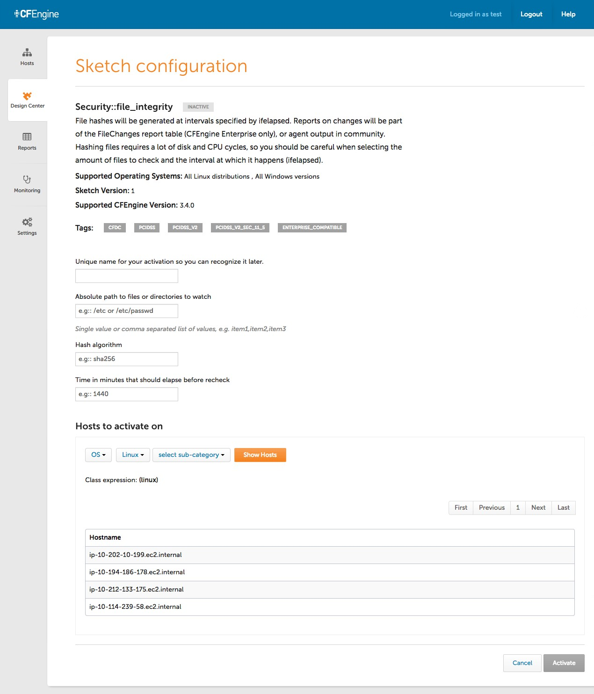
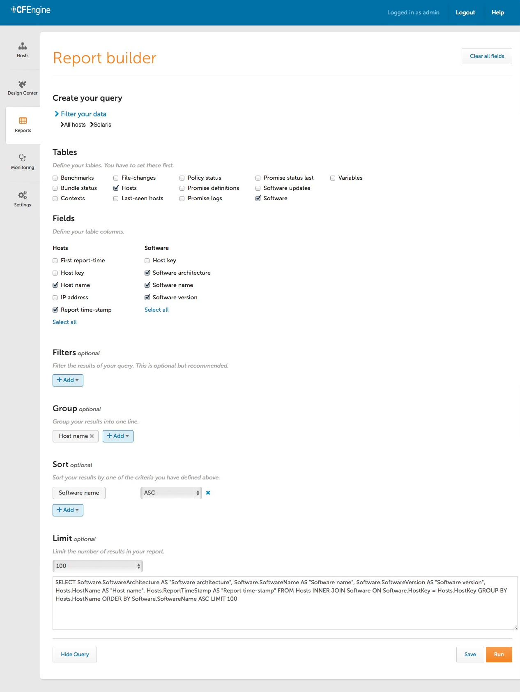
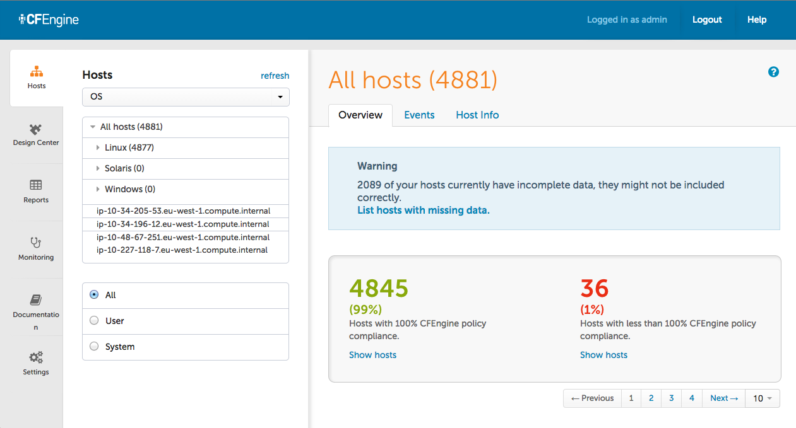
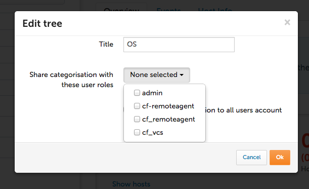

New in CFEngine
CFEngine 3.5 is the latest version of CFEngine 3. It enables Infrastructure Engineers to automate IT systems easier, faster and at a greater scale than ever before. CFEngine 3.5 allows you to manage very large and complex IT infrastructure installations when agility, scalability, security and stability are critical.
CFEngine 3.5 is compatible with all previous versions of CFEngine 3. Don't have CFEngine yet? Install and evaluate the latest version of CFEngine Enterprise using our pre-packaged Vagrant environment.
Easier to Use
No matter if you are just starting with configuration management and system automation, if you are a CFEngine novice or a battle-hardened policy coder, the new features in CFEngine 3.5 will make it easy for you to get stuff done.
Design Center, with UI in CFEngine Enterprise
CFEngine Enterprise 3.5 includes the brand-new Design Center app in the Mission Portal. You are now able to conveniently configure and activate sketches through an easy to use graphical interface, and to follow up on the activation progress.

Significantly improved parsing and evaluation of policies
A large number of parser and evaluation problems have been fixed. Iterating over arrays with nested lists has caused many headaches and workarounds in previous versions of CFEngine. With 3.5, many of those can disappear.
Policy developers get clear and consistent messages from the
stricter parser. cf-promises allowing partial check of policy - now you
are not required to have body common control to check syntax. This will
allow better integration with editors to perform automatic syntax validation.
Note: If your policy has syntactically incorrect code, then the new parser will mark those as errors. Fixing those errors should be straight forward, but see the respective section in Known Issues for information.
action_policy => warn now sets not_kept classes, which allows you to see
deeper than first order changes that might occur during dry-runs.
The new scope attribute in classes bodies allows policy writers to set
non global classes based on result of a promise. This reduces managing class
naming conflicts, especially when multiple activations of a bundle may happen.
Significant enhancements to bundle common paths, including the ability to test with automatically defined classes. Policy writers don't have to maintain their own common paths locations, or hard code paths into each bundle for paths that are well known.
CFEngine operators benefit from a range of improvements in logging output, both to the syslog and to the standard output.
New built-in functions and capabilities
A broad range of new built-in functions simplify the coding of policies significantly and offer completely new functionality.
- set operation functions that test for set membership and find intersections/differences:
- list functions to look up a specific element, find the list length, extract a portion of the list, reduce it to unique element, sort it, and filter it
- function that returns a list of all the classes that match a regular expression
- function that converts date/time values into a formatted string
- function for building a string from data, using sprintf semantics
- function for making logical decisions in a function call based on classes
- mapping function for arrays
- function for getting detailed file information
Improved out-of-the-box installation
In CFEngine Enterprise, the CFEngine Server and the Mission Portal UI are all up and running as soon as the package installation is completed. CFEngine will take over from there, and continue to maintain a healthy Server configuration through policy.
New bootstrap semantics makes bootstrapping simpler. avahi auto discovery is available now in addition to specifying a static ip. Clearer messages during the bootstrapping process makes it easier to analyze why things might not have worked.
Report collection at arbitrary scale
Scalability across multiple sites
Support for Multi-Site Querying enables the generation of reports across multiple, globally distributed CFEngine Server installations, and the centralized aggregation of data collected.
Improved performance of cf-serverd allows the handling of more connections
in parallel, resulting in faster policy distribution through the network.
Improved SQL reporting
All CFEngine reports are now based on SQL syntax. Run one of our ready-made reports with a single click, or define your own using the graphical query builder or direct SQL input. Save and schedule your reports in a quick and easy way.
- Promise logs, file, software and compliance information are available through SQL Report app
- Regular expressions are supported in SQL queries
- Enterprise API supports host and promise filtering

Better tools for CFEngine operators
- CFEngine Enterprise collects data for diagnostics, available through SQL
queries
- performance data from MongoDB
- lastseen report data for information about host connectivity
FirstReportTimeStampis recorded for all hosts- Performance data from
cf-hub
- Configurable data collection for Enterprise
- Host-side report content filter, controlled by
report_data_selectbody in access promise - filters for class, variable, promise log and monitoring reports
- Host-side report content filter, controlled by
- Self-diagnostics of a CFEngine agent installation
Streamlined Mission Portal
The Mission Portal has received another major facelift for this release. Plenty of polish went into the visual and interaction design.

Host categorizations (aka navigation trees) has received a performance boost, and can now be shared between users. Partition your system any way you like, save your categorization, and give others access. Or simply add others’ categorizations to your own account.

Microsoft Windows specific improvements
- Windows PowerShell support in
commandspromises,execresult()andreturnszero() - Improved ACL handling on Windows
- Note the syntax changes in the ChangeLog
ChangeLog
For a complete list of changes in the CFEngine, see the ChangeLog and
ChangeLog.Enterprise files in /var/cfengine/share/doc. The Core change log
is also available
online.